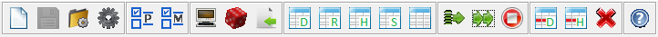

return
Toolbar

- New class
- Save class
- Load and compile class
- Compile class
- Select problem
- Select methods
- Enter data from keyboard
- Generate random data
- Load data from file
- Export tabla data
- Export table results
- Export table historical
- Export summary table
- Export all tables
- Run group of methods
- Execution intensive
- Stop execution
- Delete row in data table
- Delete row in history table
- Clear session data
- Help on OptimEx
Note:
For more information see References to menus.
September 16, 2016